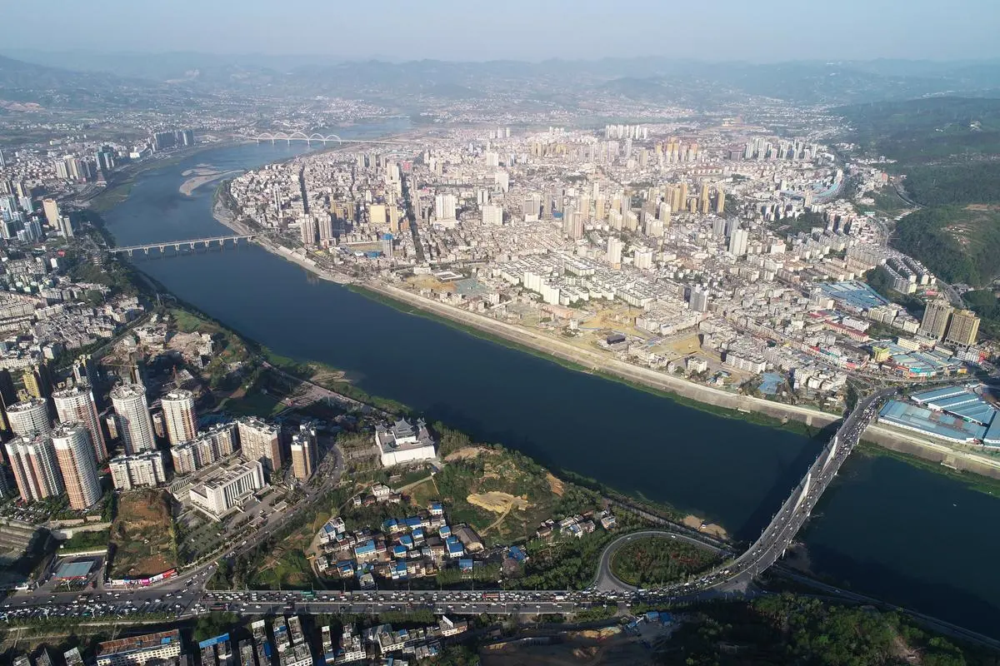

Compared with well-known cities such as Beijing and Shanghai, Ankang is a very small city. I love my hometown very much; there are so many scenery I like to see and the food I like to eat, especially my family and friends live there. Ankang is most famous for a river that flows through the middle of the city - the Han River, which is the largest tributary of the Yangtze River. The river has nurtured the residents living on both sides, and most of the residents like to take a walk by the cool river. All in all, Ankang is a tourist city with beautiful scenery. If anyone comes to China for tourism, please don't miss my beautiful hometown.
Introduce
